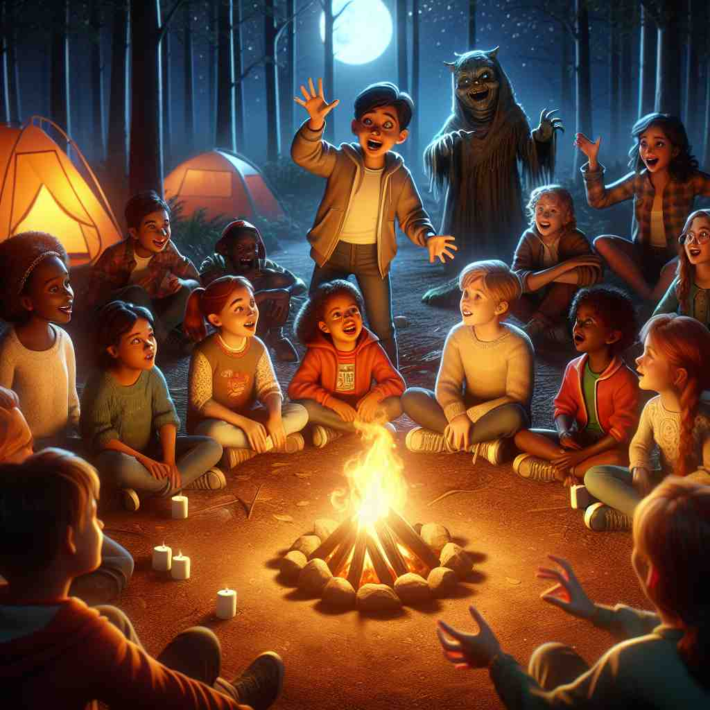
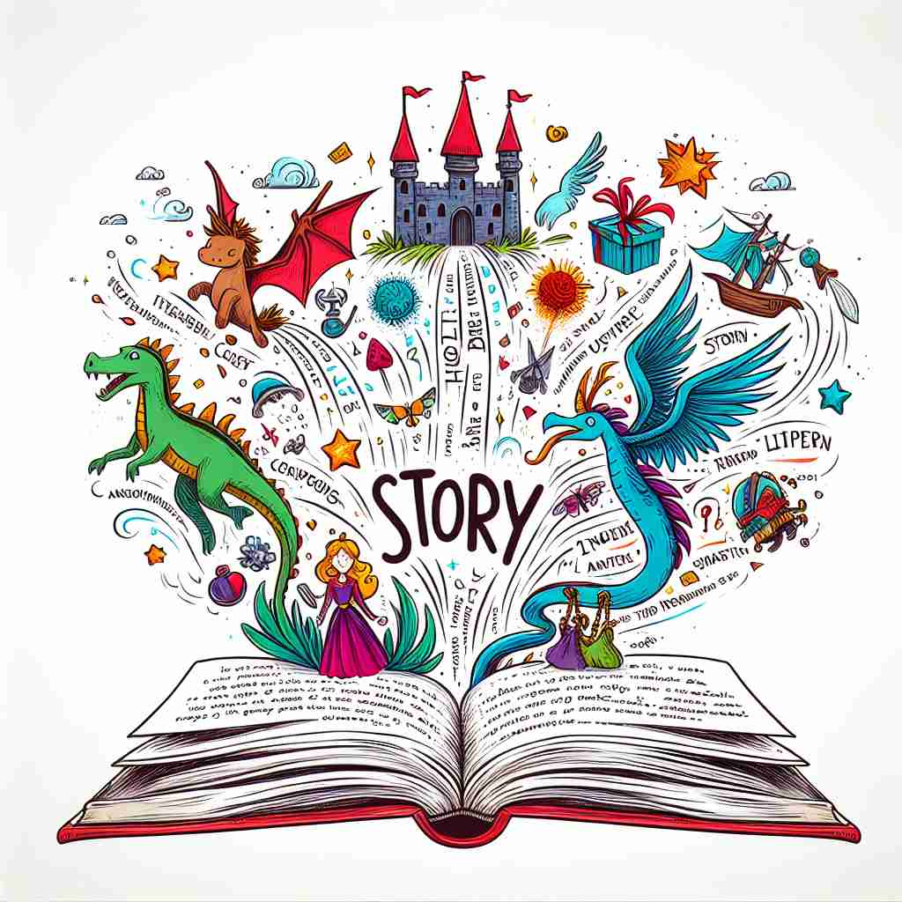

🗝️ n. an account of imaginary or real people and events told for entertainment
🖼️ 在一个舒适的客厅里，家人们围坐在一起，祖母正在给她们讲述一个充满魔法和冒险的故事。大家屏息聆听，时而惊讶，时而大笑，这是一个关于勇敢骑士和神秘城堡的故事，充满想象力和娱乐性。
🔍 想象'story'是一条线，串联起各种不同形式的叙述。无论是虚构的故事、真实的经历、新闻报道，还是建筑的楼层，都可以看作是某种形式的'叙述'或'层次'。这个核心概念贯穿了'story'的各种用法，有助于更好地理解和记忆它的多重含义。

💬 The grandmother loves to read a story to the children before bed.

💬 The detective wants to tell a story about the case he is working on.

💬 The child loves to tell a story around the campfire.

💬 The teacher likes to tell a story to the children at bedtime.
🔗 1. history: 历史 2. historian: 历史学家 3. historic: 有历史意义的
🗝️ n. an account of past events or of how something has developed
🖼️ 在一间历史博物馆中，导游向游客们介绍一幅古老的画卷。她详细讲述了这幅画背后的历史故事，包括那些决定性战役和伟大的国王，帮助人们理解这些事件如何塑造了今天的世界。
💬 The story of how they met is quite romantic.
❓ 从娱乐性叙述延伸到事实性叙述
🗝️ n. a report of an item of news in a newspaper, magazine, or broadcast
🖼️ 在一个忙碌的新闻编辑室中，记者们正在紧张地敲击键盘，一篇关于市长发表重要声明的新闻故事即将发布。电视屏幕上，主播正在播报这则即时新闻，为观众揭示当天的重大事件。
💬 The newspaper published a story about the local festival.
❓ 将新闻事件视为一种叙述
🗝️ n. a floor or level of a building
🖼️ 在一个现代化的高层建筑中，电梯门缓缓打开，一位商务人士走出来，进入大楼的第十层。他专注地查看着手机，上面显示着他今天要见的重要客户名单。这个楼层承载着许多商业活动。
💬 They live on the third story of the apartment building.
❓ 建筑的每一层就像书中的一个章节
🗝️ n. a lie, especially one given as an excuse
🖼️ 在一个学校的操场上，一群小朋友聚在一起讨论。一个小男孩正在辩解，为什么他没有做作业。他的小伙伴们听着他的故事，其中一个女孩怀疑地问道：'真的吗？我觉得你只是在编借口罢了。'
💬 Don't give me that story; I know you were out late last night.
❓ 虚构的叙述被视为不真实的说法
🗝️ n. the sequence of events in a work of fiction
🖼️ 在一个宁静的图书馆中，一位年轻的作者正在修改自己的小说草稿。她精心推敲每一个桥段，确保故事的情节发展合理且引人入胜，每一个人物的命运都交织出非凡的情节。
💬 The plot is the story of how the characters overcome their challenges.
❓ 从整体叙述延伸到叙述的结构